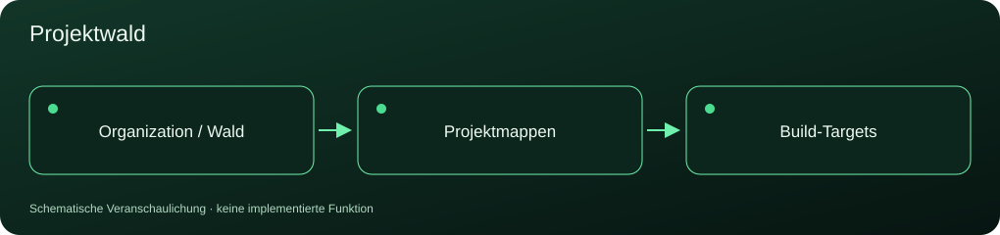
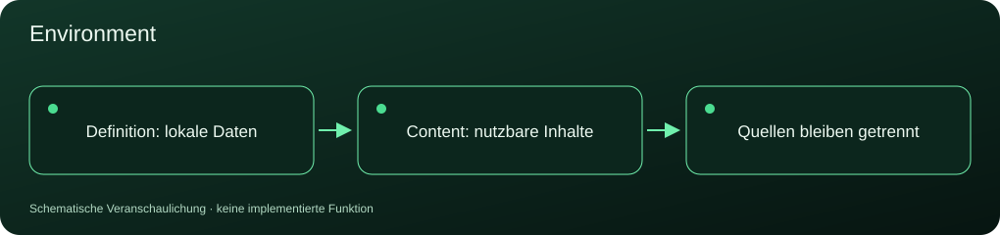

VORABANSICHT · GREEN DARK ILLUMINATION
Organization
Ein gemeinsamer Rahmen für Projekte, Inhalte und Werkzeuge.
92 Abschnitte12 Illustrationen40 Bereiche mit offenen Punkten
Statische Ansicht der aktuellen Organization.txt. Historische Anhänge sind ausgeblendet. Keine Aktivierung oder Umsetzung des Entwurfs.
1 Wesen und Geltungsbereich von Organization

Organization ist die gemeinsame organisatorische Grundlage für Projekte. Es definiert übergreifende Begriffe, Konventionen und Regeln sowie die Art, wie Projekte diese übernehmen und ergänzen. Das Verhältnis entspricht sinngemäß einer Basisklasse in C++: Ein Projekt übernimmt ausdrücklich festgelegte Grundlagen und konkretisiert sie für seinen Anwendungsbereich. Es kann vorgesehene Erweiterungen und Abweichungen definieren. Dabei muss erkennbar bleiben, welche Regeln verbindlich, welche Standardvorgaben und welche projektspezifisch überschreibbar sind. "Ableiten von Organization" und "Benutzen der Organization" sind gleichbedeutend. Die Benutzung erfolgt ausdrücklich. Allein die Existenz oder Erreichbarkeit von Organization macht dessen Inhalte für andere Projekte nicht verbindlich. Eine Benutzungsinstanz kann einen Projektwald mit mehreren Projektbäumen enthalten. Die globalen Organisations- und Arbeitsraumdefinitionen dieser Instanz gelten für jeden Projektknoten. Der Name der konkreten Organization ist zugleich der Name ihres Projektwaldes. Seine maßgebliche Definition erfolgt in Organization.json. "Global" bezeichnet den gemeinsamen Geltungsbereich innerhalb dieser Benutzungsinstanz.
1.1 Benutzen der Organization
Die Benutzung wird durch Environment/Definition/Organization.json unterhalb des primären Workspace Root des Projektwaldes definiert.
Organization.json enthält den Namen der Benutzungsinstanz, den Hauptschalter sowie die globalen Arbeitsraumdefinitionen. Eine separate Workspace.json ist nicht erforderlich.
Minimaldefinition von Organization.json:
{
"Organization": {
"Name": "<OrganizationName>",
"Aktivation": true,
"Workspace": {
"ProjectForest": ".",
"OrganizationBase": "\\\\acer\\e\\Programmierung\\Organisation"
}
}
}
Organization.Name bezeichnet zugleich den Projektwaldnamen. Der Platzhalter ist durch den tatsächlichen Namen zu ersetzen.
Aktivation ist der boolesche Hauptschalter für die Benutzung der Organization.
- true: Die Benutzung der Organization ist aktiviert.
- false: Die Benutzung der Organization ist deaktiviert.
Bei true gelten die Grundlagen der Organization entsprechend den Ableitungsregeln.
Bei false sind sämtliche durch diese Organisationsdefinition verwalteten Komponenten deaktiviert. Dies gilt auch für rein lokale Komponenten.
Workspace.ProjectForest bezeichnet den primären Workspace Root des Projektwaldes beziehungsweise der globalen Projektkonkretisierung. Der Wert "." bezeichnet diese Wurzel, nicht den Ablageort der JSON-Datei.
Workspace.OrganizationBase bezeichnet den Workspace Root der zugrunde liegenden Organization durch einen absoluten Pfad. Dieser Arbeitsraum übernimmt die sekundäre Rolle.
Beide Arbeitsraumdefinitionen gelten für jeden Projektknoten des Projektwaldes.
Die Definition des Arbeitsraums der Organization-Basis allein aktiviert die Benutzung der Organization nicht.
Der zentrale Einstieg Convention/Organization/Organization.html wird relativ zu Workspace.OrganizationBase aufgelöst.
Zusätzliche Arbeitsräume einzelner Projektknoten werden in Project_Forest.json definiert.1.1.1 Primäre Datenquellen und Referenzbeziehungen
Für jede Komponente einer Organisation muss eindeutig bestimmt sein, welche Datei ihre maßgebliche Primärquelle ist und welche weiteren Dateien diese Quelle referenzieren oder aus ihr erzeugt werden. Primärquelle bezeichnet die maßgebliche Quelle eines Inhalts. Diese Bedeutung ist von der Unterscheidung zwischen primärem und sekundärem Arbeitsraum unabhängig. Eine Primärquelle kann selbst andere Primärquellen referenzieren. Ihre Maßgeblichkeit bezieht sich auf den Inhalt, den sie eigenständig definiert. Grundsätzlich werden bestehende Inhalte referenziert, statt sie in weiteren Dateien erneut zu definieren. Redundante Datenhaltung ist auf das notwendige Minimum zu beschränken. Referenzierung, Generierung und organisatorische Vererbung sind unterschiedliche Beziehungen und müssen getrennt beschrieben werden. Eine Referenz erzeugt keine Kopie, aktiviert keine Arbeitsanweisung und startet keinen Process. Eine generierte Darstellung wird nicht zur maßgeblichen Quelle ihrer zugrunde liegenden Daten. Die ausdrücklich vorgesehene Instanziierung einer Dokumentationsvorlage bleibt möglich. Gemeinsam genutzte Definitionen sollen dabei weiterhin referenziert werden, soweit kein eigenständiger Dokumentinhalt oder ausdrücklich festgelegter Stand benötigt wird.
1.1.1.1 Primärquellen nach Inhaltsbereich
Convention: Die jeweils geltende HTML-Datei ist die Primärquelle der darin eigenständig formulierten Konvention. Referenzierte Umgebungswerte bleiben in den zugehörigen JSON-Dateien maßgeblich. Ihre Darstellung innerhalb einer Konvention macht sie nicht zu einer zweiten Definition. Welche Fassung einer Konvention gilt, ergibt sich aus Organization_Inheritance.json. Process: Die jeweils geltende Arbeitsanweisung ist die Primärquelle des beschriebenen Ablaufs und seiner zulässigen Aufrufe. Umgebungswerte und konkrete Parametergrundlagen werden aus den dafür maßgeblichen Umgebungsdefinitionen referenziert. Welche Fassung eines Process gilt, ergibt sich aus Organization_Inheritance.json. Environment/Definition: Die JSON-Dateien unter Environment/Definition des primären Arbeitsraums sind die Primärquellen der von ihnen definierten Umgebungsdaten. HTML-Dateien, die diese Daten darstellen, referenzieren die JSON-Dateien. Sie führen keine unabhängig gepflegte Kopie derselben Definitionen. Eine HTML-Datei kann sowohl eigenständige Erläuterungen enthalten als auch JSON-Daten darstellen. Die Herkunft und Maßgeblichkeit dieser Inhalte müssen unterscheidbar bleiben.
1.1.1.2 Organization_Reference.json
Die Referenz- und Abhängigkeitsstruktur wird in Environment/Definition/Organization_Reference.json des primären Arbeitsraums gespeichert. Die Datei beschreibt: - welche Primärquellen existieren; - welche Dateien diese Quellen referenzieren; - welche Dateien aus diesen Quellen generiert werden; - welche Beziehungen nur bestimmte Inhalte einer Datei betreffen. Die Struktur bildet einen gerichteten Abhängigkeitsgraphen. Eine Datei kann mehrere Quellen verwenden, und eine Quelle kann mehrere abhängige Dateien besitzen. Die Beziehungen werden nur einmal maßgeblich gespeichert. Die Übersicht aller von einer Primärquelle abhängigen Dateien wird daraus ermittelt. Vorgeschlagene Hauptstrukturen: - "Source": Verzeichnis der Quellen und abhängigen Dateien. - "Relation": Verzeichnis ihrer gerichteten Beziehungen. Vorgeschlagene Angaben je Source: - Eindeutiger Dateiverweis. - Zuordnung zum Arbeitsraum beziehungsweise Verweis auf die Komponente in Organization_Inheritance.json. - Inhaltlicher Zuständigkeitsbereich, soweit eine Datei unterschiedliche Arten von Inhalten enthält. Vorgeschlagene Angaben je Relation: - Quellverweis. - Verweis auf die abhängige Datei. - Beziehungsart. - Optionaler Bezug auf einen bestimmten Teilinhalt. - Bei Generierung: Verweis auf den zuständigen Process oder das zuständige Tool. - Bei Generierung: Festlegung, wann eine erneute Generierung erforderlich ist. Die konkrete JSON-Struktur wird noch festgelegt. Dateilokationen und Ableitungseinstellungen aus Organization_Inheritance.json werden referenziert und nicht erneut unabhängig definiert. Umgebungsdateien können unmittelbar als Quellen verzeichnet werden, obwohl sie keine vererbbaren Komponenten sind.
1.1.1.3 Beziehungsarten
Reference: Die abhängige Datei verwendet Inhalte der Quelle durch Referenzierung. Änderungen werden beim erneuten Auflösen beziehungsweise Anzeigen der Referenz berücksichtigt. Generation: Die abhängige Datei oder ein festgelegter Teil davon wird aus der Quelle erzeugt. Eine Änderung der Quelle kann eine erneute Generierung erforderlich machen. Bei mehreren Eingabequellen werden sämtliche für die Generierung erforderlichen Quellen angegeben. Für generierte Inhalte wird festgelegt, ob die gesamte Zieldatei oder nur bestimmte Bereiche erzeugt werden. Generierte Bereiche werden nicht unabhängig von ihren Primärquellen gepflegt. Ein Verweis allein begründet keine automatische Generierung. Auslöser und ausführender Process beziehungsweise ausführendes Tool müssen ausdrücklich definiert sein.
1.1.1.4 Beispiel eines Abhängigkeitsdiagramms
Die Pfeile verlaufen von der Primärquelle zur abhängigen Darstellung. Environment/Definition/Organization.json ------------+ Environment/Definition/Organization_Inheritance.json +--> Convention/Organization/Organization.html Environment/Definition/Organization_Reference.json --+ Die Beziehungen dieses Beispiels sind Reference-Beziehungen. Organization.html stellt die referenzierten Daten dar und kann zusätzlich eigenständige Konventionstexte enthalten. Das Beispiel legt keine Generierung der gesamten Organization.html fest. HTML-Darstellungen werden bevorzugt unmittelbar aus ihren referenzierten JSON-Daten aufgebaut. Eine zusätzlich gespeicherte Darstellung wird nur vorgesehen, wenn dafür ein konkreter Bedarf besteht.
1.1.1.5 Konsistenz und Aktualisierung
Alle Dateiverweise müssen eindeutig auflösbar sein. Umbenennungen, Verschiebungen und entfernte Quellen müssen beim Aktualisieren der Referenzstruktur berücksichtigt werden. Widersprüchliche Zuständigkeiten für denselben Inhalt müssen geklärt werden. Zyklische Referenzen dürfen keine unendliche Auflösung verursachen. Generierungsabhängigkeiten müssen eine eindeutige Ausführungsreihenfolge erlauben. Ein Abhängigkeitsdiagramm wird aus Organization_Reference.json abgeleitet und nicht als zweite, unabhängig gepflegte Beziehungsdefinition geführt. Die Behandlung veralteter generierter Inhalte und der Umfang automatischer Prüfungen werden noch festgelegt.
1.1.2 Installation einer projektkonkreten Organisationsbasis
Die Installation richtet eine Benutzungsinstanz der Organization für einen konkreten Projektwald ein. Sie stellt die lokalen Umgebungsdefinitionen, die Zuordnung zur Organization-Basis sowie die Komponenten- und Referenzverzeichnisse bereit. Die Installation wird durch einen noch zu definierenden Process oder ein Tool ausgeführt. Dieser Abschnitt allein startet keine Installation.
1.1.2.1 Erforderliche Angaben
Für die Installation müssen mindestens bestimmt sein: - Organization.Name als Name der globalen Projektkonkretisierung und zugleich als Projektwaldname. - Primärer Workspace Root des Projektwaldes. - Workspace Root der zu benutzenden Organization-Basis als absoluter Pfad. - Initiale Projektbäume und Projektknoten mit ihren Namen und parentalen Beziehungen. - Projektverantwortliche Benutzer und deren Usernamen. - Gewünschter Zustand des Hauptschalters Aktivation. - Zwei bis beliebig viele absolute Zielpfade für externe Sicherungen. Zusätzlich sind nach Bedarf anzugeben: - Weitere Benutzer und Projektrollen. - Zusätzliche Workspaces einzelner Projektknoten. - Zugriffsgewährungen. - Abweichungen von der standardmäßigen Komponentenvererbung. - Dokumentationsvorgaben und Vorlagenzuordnungen. - Weitere für die vorgesehenen Aktivitäten erforderliche Umgebungswerte. Fehlende, für die konkrete Installation notwendige Angaben müssen ermittelt werden. Sie dürfen nicht durch erfundene Projekt-, Benutzer- oder Sicherungsdaten ersetzt werden.
1.1.2.2 Zu erstellende Umgebungsdefinitionen
Unter Environment/Definition des primären Arbeitsraums werden folgende Dateien eingerichtet: - Organization.json - Organization_Inheritance.json - Organization_Reference.json - Organization_BackupTarget.json - User.json - Project_Forest.json - Project_Structure_Folder_Default.json - Access.json - Documentation.json Organization.json enthält den Namen, den Hauptschalter, die globalen Workspace-Definitionen und die statische Übersicht der Definitionsdateien. Organization_Inheritance.json enthält die verfügbaren Ableitungsregeln, den ermittelten Komponentenbestand und dessen Einstellungen. Organization_Reference.json enthält die Quellen und ihre Referenz- beziehungsweise Generierungsbeziehungen. Organization_BackupTarget.json enthält die globalen absoluten Zielpfade für externe Sicherungen. User.json enthält die für die Benutzungsinstanz festgelegten Benutzer. Project_Forest.json enthält die Projektbäume und Projektknoten, Verantwortlichkeiten und gegebenenfalls zusätzliche Workspaces. Der Waldname wird aus Organization.Name referenziert. Access.json enthält die ausdrücklich festgelegten Zugriffsgewährungen. Documentation.json enthält die festgelegten Dokumentationstypen, HeaderTemplate-Strukturen und Vorlagenzuordnungen. Umgebungsdefinitionen der Organization-Basis werden nicht als lokale Umgebungswerte übernommen. Die noch auszuarbeitenden Lokalisierungsdateien werden nach Festlegung ihrer Struktur und Ablage in die Installation aufgenommen.
1.1.2.3 Standardvordefinitionen
Vorgeschlagene Installationsvorgaben: - Komponenten der nach Abschnitt 3 vererbbaren Verzeichnisse werden standardmäßig mit Aktivation: true und Inheritance: true geführt. - Replacement und Redefinition werden nur bei ausdrücklich festgelegten Konkretisierungen zugewiesen. - Environment/Definition bleibt von der Vererbung ausgeschlossen. - Zusätzliche Projekt-Workspaces und zusätzliche Zugriffsgewährungen werden nur aus tatsächlichen Angaben eingerichtet. - Für Documentation.json werden die vorgesehenen Dokumentationstypen angelegt. - Noch nicht festgelegte HeaderTemplates, Referenzen und Vorlagenzuordnungen werden nicht erfunden. - Sicherungsziele werden aus den angegebenen absoluten Pfaden eingerichtet; es werden keine Zielpfade geraten. - Funktionsbereiche mit unvollständigen Voraussetzungen werden vor ihrer Benutzung vervollständigt. Wiederverwendbare Installationsvorlagen können als ausdrücklich dafür bestimmte Komponenten bereitgestellt werden. Sie enthalten Strukturen und vereinbarte Vorgaben, keine ungeprüft zu übernehmenden Umgebungswerte einer anderen Benutzungsinstanz. Welche weiteren Angaben zwingend für den Abschluss der Installation erforderlich sind, wird mit den jeweiligen Dateistrukturen festgelegt.
1.1.2.4 Referenzieren, Ableiten und Generieren
Die Komponenten der Organization-Basis werden grundsätzlich über ihre Lokationen und Ableitungsregeln benutzt. Eine vollständige lokale Kopie der Basis ist nicht erforderlich. Lokale Dateien werden für ausdrücklich gewünschte Konkretisierungen und eigenständige lokale Inhalte angelegt. HTML-Darstellungen der Umgebungsdefinitionen referenzieren die lokalen JSON-Primärquellen. Zusätzliche Dateien werden nur generiert, wenn ihre Generierung und ihre Eingabequellen ausdrücklich festgelegt sind. Eine erforderliche technische Ladebrücke wird eingerichtet und verweist auf den vorgesehenen zentralen Einstieg. Der Komponentenbestand wird nach Abschnitt 3.6 ermittelt. Anschließend werden die bekannten Referenz- und Generierungsbeziehungen in Organization_Reference.json erfasst. Eine bestehende Benutzungsinstanz darf bei erneuter Installation nicht durch Standardwerte zurückgesetzt werden. Vorhandene Einstellungen werden abgeglichen und erhalten, soweit keine Änderung ausdrücklich vorgesehen ist. Für die Aktualisierung einer vorhandenen Organization_Inheritance.json gilt insbesondere die vorgeschriebene lokale, temporäre Kopie.
1.1.2.5 Prüfung und Abschluss
Vor Abschluss der Installation wird geprüft: - Sind der Name der Organization und damit der Projektwaldname festgelegt? - Sind die globalen Arbeitsräume eindeutig bestimmt und erreichbar? - Sind Projektbäume und vollständige Projektnamen konsistent? - Sind Benutzerverweise eindeutig auflösbar? - Sind die erforderlichen Umgebungsdefinitionen vorhanden und konsistent? - Enthält Organization_BackupTarget.json mindestens zwei unterschiedliche absolute externe Zielpfade? - Sind Komponentenlokationen und Ableitungsregeln eindeutig? - Sind die erfassten Quellen und Referenzen auflösbar? - Sind vorgesehene Generierungen eindeutig definiert? - Sind verbleibende offene Angaben ausgewiesen? Die Aktivierung der fertigen Benutzungsinstanz erfolgt entsprechend dem festgelegten Hauptschalterzustand. Die Installation startet nicht automatisch die anschließend verfügbaren Processes oder Tools. Wenn ProjectForest und OrganizationBase dieselbe Wurzel bezeichnen, gelten dieselben Installations- und Prüfregeln. Identische Dateien werden nicht doppelt angelegt oder als Konkretisierung ihrer selbst behandelt.
2 Zentraler Einstieg und Instruktionsbasis
Convention/Organization/Organization.html bildet den einzigen fachlichen Einstiegspunkt in die Instruktionsbasis, gemeinsam für Menschen und KI-Agenten. Die Datei erläutert Organization, seinen Aufbau, die Benutzung durch Projekte sowie die Regeln zur Auswahl und Anwendung weiterer Quellen. Die übrigen Dateien enthalten die jeweils maßgeblichen Detailregelungen. Der zentrale Einstieg beschreibt, wie deren Geltung und Aktivierung durch die Organisationsdefinition und die Ableitungsregeln gesteuert werden. Ein Verweis allein aktiviert eine Quelle nicht. Die standardmäßige Vererbung nach Abschnitt 3 bleibt davon unberührt. Die Vererbung einer Arbeitsanweisung oder eines Tools bedeutet nicht dessen Ausführung. Eine technisch erforderliche Ladebrücke wie AGENTS.md verweist lediglich auf diesen Einstiegspunkt. Sie enthält keine eigenständige, parallel gepflegte organisatorische Regelbasis. Eine gesonderte Kurzfassung für KI-Agenten ist zunächst nicht vorgesehen. Entscheidend für den Verarbeitungsaufwand sind Umfang, Klarheit und die Zahl zusätzlich erforderlicher Lesevorgänge. Deshalb bleibt der Einstieg überschaubar und eindeutig; Detailquellen werden bedarfsgerecht gelesen. Ob später eine technische Optimierung erforderlich ist, wird anhand der tatsächlichen Nutzung beurteilt. Beschreibungen aller Art innerhalb der gesamten Organization sollen später über Lokalisierungsreferenzen bereitgestellt werden. Dies ist bei der Gestaltung der Definitionsstrukturen bereits einzuplanen. Die konkrete Definition und Einführung dieser Referenzen erfolgt später.
3 Ableitungsregeln der Organisation
Bei aktivierter Benutzung der Organization werden standardmäßig sämtliche Dateien aus folgenden Verzeichnissen der Organisationsbasis einschließlich ihrer Unterverzeichnisse vererbt: - Convention - Process - Tool - Environment/Content: Alle Inhaltskomponenten einschließlich Localization.json, Dokumentationsvorlagen und Appearance-Dateien. Für diese standardmäßige Vererbung ist keine zusätzliche Aktivierung jeder einzelnen Datei erforderlich. Environment/Definition wird ausdrücklich nicht vererbt. Maßgeblich sind ausschließlich die Umgebungsdefinitionen unterhalb des primären Workspace Root des Projektwaldes.
3.1 Projektspezifische Konkretisierung
Soll eine geerbte Komponente konkretisiert werden, wird die entsprechende Datei im primären Arbeitsraum unter demselben relativen Verzeichnispfad und Dateinamen wie in der Organisationsbasis angelegt. Für jede Konkretisierung muss eine Ableitungsregel in Environment/Definition/Organization_Inheritance.json definiert werden. Das bloße Vorhandensein einer lokalen Datei legt noch nicht fest, wie sie mit der Basis zusammenwirkt. Zusätzliche Arbeitsräume von Projektknoten werden durch ihre Definition allein nicht zu weiteren Quellen für Organisationskomponenten. Wie eine Konkretisierung auf einzelne Projektknoten begrenzt werden kann, ist bei der Zuordnung der Ableitungsregeln noch festzulegen.
3.2 Definition der Ableitungsregeln
Organization_Inheritance.json enthält die Hauptstruktur "Inheritance Rule". Jede Regel enthält: - "Ruletype": Art der Ableitungsregel. - "Description": Beschreibung ihrer Bedeutung. Die Zuordnung einer Regel zu einer konkreten Datei oder einer Gruppe von Dateien ist noch festzulegen. Für Aktivation und Inheritance werden boolesche Zustände benötigt. Ihre konkrete Speicherung innerhalb der Regelstruktur ist noch festzulegen. Folgende Regeln sind vorgesehen: Aktivation Steuert die Aktivierung der Komponente. - true: Die Komponente ist aktiviert, sofern auch der Hauptschalter Organization.Aktivation aktiviert ist. - false: Die Komponente ist deaktiviert. Dateien der Basis und des primären Arbeitsraums werden für diese Komponente ignoriert. Ohne abweichende Regel ist die Komponente standardmäßig aktiviert. Inheritance Steuert die Vererbung der Komponente aus der Organisationsbasis. - true: Die Komponente aus der Organisationsbasis im sekundären Arbeitsraum wird vererbt. Lokale Konkretisierungen werden nach den hierfür definierten Regeln berücksichtigt. - false: Die Organisationsbasis im sekundären Arbeitsraum wird für diese Komponente nicht herangezogen. Ausschließlich lokale Dateien im primären Arbeitsraum sind gültig, sofern sie existieren. Ohne abweichende Regel ist die Vererbung für die in Abschnitt 3 genannten Verzeichnisse standardmäßig aktiviert. Inheritance aktiviert keine durch Aktivation deaktivierte Komponente. Replacement [Vorschlag; Abgrenzung noch festzulegen] Eine lokale Datei ersetzt ihr Gegenstück aus der Organisationsbasis vollständig. Inhalte der Basisdatei werden nicht übernommen. Replacement und Inheritance: false können bei einer einzelnen vorhandenen lokalen Datei zum gleichen Ergebnis führen. Die vorgeschlagene Unterscheidung lautet: Replacement setzt ein zu ersetzendes Gegenstück und dessen lokalen Ersatz voraus. Inheritance: false schließt die Basis auch dann aus, wenn keine lokale Datei existiert. Redefinition Die lokale Datei überschreibt bestimmte Inhalte der Basisdatei und/oder erweitert diese. Nicht betroffene Inhalte der Basis bleiben erhalten. Redefinition setzt voraus, dass die Vererbung für die betreffende Komponente aktiviert ist.
3.3 Hauptschalter und Komponentenaktivierung
Eine Komponentenregel kann den Hauptschalter Organization.Aktivation nicht außer Kraft setzen. Für die tatsächliche Aktivität einer Komponente gilt: Komponentenaktivität = Organization.Aktivation && Komponentenregel.Aktivation Komponentenregel.Aktivation bezeichnet hier den Aktivierungszustand der Komponente. Diese Schreibweise legt noch keine JSON-Struktur fest. Aktivation: true auf Komponentenebene bedeutet lediglich, dass die Komponente nicht zusätzlich deaktiviert ist. Es aktiviert weder den Hauptschalter noch eine durch ihn deaktivierte Komponente. Aktivation: false auf Komponentenebene deaktiviert ausschließlich die betreffende Komponente. Organization.Aktivation: false deaktiviert sämtliche durch diese Organisationsdefinition verwalteten Komponenten, einschließlich rein lokaler Komponenten mit Inheritance: false.
3.4 Redefinition semantischer Inhalte
Für Process und Convention erfolgt eine Überschreibung nur bei semantisch einander entsprechenden Inhalten. Die Zuordnung und Zusammenführung erfolgen in der Regel durch einen KI-Agenten. Semantisch entsprechende Inhalte werden durch die lokale Konkretisierung überschrieben. Ergänzende Inhalte erweitern die Basis. Nicht betroffene Inhalte bleiben erhalten. Ist die Zuordnung mehrdeutig oder widersprüchlich, darf keine stillschweigende Überschreibung erfolgen. Die Konkretisierung muss zunächst eindeutig bestimmt werden.
3.5 Redefinition strukturierter und binärer Dateien [Präzisierungsvorschlag]
Bei anderen Dateitypen setzt eine partielle Redefinition eindeutig zuordenbare Bestandteile und dateiformatspezifische Regeln für deren Zusammenführung voraus. Eine CSS-Datei kann beispielsweise durch lokale Deklarationen teilweise überschrieben oder erweitert werden. Welche Deklaration wirksam wird, richtet sich dabei nach den CSS-Regeln, einschließlich Reihenfolge, Spezifität und Kaskade. Binäre Übereinstimmung weist identische Inhalte nach, definiert aber keine Zusammenführung unterschiedlicher Inhalte. Für Binärdateien oder Dateiformate ohne festgelegte Zusammenführungsregeln ist deshalb eine vollständige Ersetzung durch Replacement vorzusehen.
3.6 Komponentenverzeichnis und Aktualisierung der Ableitung
Die Komponenten einer Organisation müssen beim Neuerstellen einer Ableitung sowie bei relevanten Änderungen erneut ermittelt werden. Das Ergebnis wird im primären Arbeitsraum in Environment/Definition/Organization_Inheritance.json gespeichert. Die Datei enthält in dieser Reihenfolge: - "Inheritance Rule": Definition der verfügbaren Ableitungsregeln. - "Component": Verzeichnis der ermittelten Komponenten und ihrer zugewiesenen Ableitungsregeln. Die Struktur "Inheritance Rule" wird ausschließlich in dieser Datei geführt. Für jede Komponente werden mindestens folgende Angaben geführt: - Dateiname ohne Pfad. - Liste aller Lokationen, jeweils als Verzeichnispfad ohne Dateiname. - Ausgewählte Ableitungsregel beziehungsweise Regelkonfiguration. Die Ermittlung berücksichtigt die nach Abschnitt 3 vererbbaren Verzeichnisse der Organisationsbasis und ihre lokalen Gegenstücke im primären Arbeitsraum. Environment/Definition wird nicht als vererbbare Komponente aufgenommen. Gegenstücke werden anhand ihres identischen relativen Verzeichnispfads und Dateinamens zugeordnet. Der Dateiname allein reicht zur Identifikation einer Komponente nicht aus. Die Lokationen müssen eindeutig dem primären beziehungsweise sekundären Arbeitsraum zugeordnet werden können. Eine Lokation kann beide Rollen erfüllen. Die konkrete JSON-Darstellung dieser Zuordnung ist noch festzulegen.
3.6.1 Anlässe für eine Aktualisierung
Eine Ermittlung beziehungsweise Aktualisierung ist erforderlich: - beim Neuerstellen einer Ableitung; - beim Wechsel der Organisationsbasis; - beim Hinzufügen, Entfernen, Umbenennen oder Verschieben relevanter Dateien; - bei Änderungen der Ableitungsregeln; - auf ausdrücklichen Auftrag. Inhaltliche Änderungen bestehender Dateien erfordern eine erneute Prüfung, soweit sie die Anwendbarkeit oder Eindeutigkeit einer Redefinition beeinflussen. Ob Änderungen automatisch erkannt werden und ob daraus automatisch eine Aktualisierung folgt, ist noch festzulegen.
3.6.2 Abgleich mit bestehenden Einstellungen
Vor jeder Aktualisierung einer vorhandenen Organization_Inheritance.json muss eine lokale, temporäre Kopie dieser Datei angelegt werden. Anschließend wird der aktuelle Komponentenbestand neu ermittelt und mit der temporären Kopie abgeglichen. Dabei gelten folgende Regeln: - Bestehende Ableitungseinstellungen eindeutig wiedererkannter Komponenten bleiben erhalten. - Neue Komponenten erhalten die geltenden Standardeinstellungen, soweit keine ausdrückliche Konkretisierung vorliegt. - Für neue lokale Konkretisierungen muss die erforderliche Ableitungsregel festgelegt werden; sie darf nicht stillschweigend geraten werden. - Entfernte Komponenten und ihre bisherigen Einstellungen werden beim Abgleich ausdrücklich ausgewiesen. - Umbenannte oder verschobene Komponenten dürfen nur bei eindeutiger Zuordnung automatisch ihre bisherigen Einstellungen übernehmen. - Mehrdeutige Zuordnungen und nicht mehr gültige Regelzuweisungen müssen geklärt werden. Die aktualisierte Datei darf die bisherige Datei erst ersetzen, wenn der Abgleich abgeschlossen und die neue Definition auf Konsistenz geprüft ist. Bei einem Fehler bleibt die bisherige Datei erhalten. Die temporäre Kopie bleibt bis zum erfolgreichen Abschluss der Aktualisierung verfügbar.
3.6.3 Noch festzulegende Details
- JSON-Struktur und eindeutige Identifikation der Komponenten. - Darstellung und Zuordnung der Lokationen. - Darstellung kombinierter Einstellungen für Aktivation, Inheritance und Replacement beziehungsweise Redefinition. - Geltungsbereich komponentenspezifischer Regeln innerhalb des Projektwaldes. - Verfahren zur Änderungserkennung und Umfang einer möglichen Automatik. - Umgang mit entfernten Komponenten und Aufbewahrung ihrer bisherigen Einstellungen. - Ablageort und Bereinigung der temporären Kopie.
4 Konventionen
Die Konventionen bilden das Regelwerk einer Organisation. Konventionen sind semantisch formulierte Regeln, welche die Organisation selbst deklarieren und definieren. Sie enthalten im Wesentlichen Regeln und keine konkreten Umgebungsdefinitionen einer Benutzungsinstanz. Alle HTML-Dateien unterhalb von Convention sind gültige Beschreibungen von Konventionen. Ihre Aktivierung wird durch Organization.json und die komponentenspezifischen Einstellungen in Organization_Inheritance.json verwaltet. Ohne abweichende Regel gilt die standardmäßige Vererbung nach Abschnitt 3. Die folgenden Unterpunkte sind alphabetisch nach ihrem Convention-Bereich geordnet. Sie enthalten die bisher festgelegten Regeln und ausdrücklich offenen Detailfragen.
4.1 Convention/Appearance
Appearance bezeichnet das übergreifende, erweiterte und verallgemeinerte Darstellungskonzept der Organization. Es beschreibt das Erscheinungsbild von Dokumenten, Benutzeroberflächen, Anwendungen und Projekt-Targets sowie 3D-Szenen und weiteren darstellenden Systemen. Appearance-Definitionen werden im JSON-Format gespeichert. Die Konvention beschreibt deren Bedeutung und Anwendung; die JSON-Dateien enthalten die konkreten Darstellungsdaten. Diese Festlegung ist Bestandteil des Entwurfs. Sie führt noch keine Implementierung oder automatische Aktivierung ein.
4.1.1 Geltungsbereich und Spezialisierung
Appearance bietet einen gemeinsamen begrifflichen Rahmen mit fachlich abgegrenzten Spezialisierungen. Nicht jede Eigenschaft muss für jedes darstellende System gelten. Mögliche Bereiche sind Farben, Typografie, Abstände, Rahmen, Hintergründe, Darstellungszustände und Animationen sowie szenenspezifische Angaben zu Beleuchtung, Materialien und Geflechtdarstellung. Anwendungen und Projekt-Targets dürfen spezifische Darstellungseigenschaften ergänzen. Deren Bedeutung, zulässige Werte und unterstützte Anwendung müssen ausdrücklich definiert sein. Appearance beschreibt die Darstellung. Fachliche Modelldaten, Geometrieerzeugung, Programmlogik und Exportabläufe werden nicht allein durch ihre Verwendung in einer Darstellung zu Appearance-Eigenschaften.
4.1.2 Verhältnis zu CSS und darstellenden Anwendungen
Appearance verallgemeinert das Darstellungskonzept über CSS hinaus, ersetzt jedoch nicht die darstellenden Technologien. Eine Anwendung setzt die von ihr unterstützten JSON-Eigenschaften in konkrete Darstellung um. Für HTML-Oberflächen kann dies durch CSS geschehen; für Szenen durch die jeweilige Zeichen- oder Renderinglogik. Ein JSON-Eintrag allein implementiert keine Darstellungsfunktion. Unterstützte Eigenschaften und das Verhalten bei nicht unterstützten Eigenschaften müssen für die jeweilige Anwendung festgelegt werden. Eine eigene CSS-Selektorsprache oder die Übernahme der CSS-Kaskade wird durch diese Konvention nicht vorausgesetzt.
4.1.3 Ablage und Quellen
Appearance-Definitionen sind gemeinsam nutzbare Inhalte und gehören fachlich zu Environment/Content. Der genaue Unterpfad und die Dateibenennung werden noch festgelegt. Globale Vorgaben und projektspezifische Spezialisierungen können getrennte JSON-Quellen besitzen. Ihre Auswahl und ihr Zusammenwirken müssen ausdrücklich beschrieben werden. Die jeweiligen JSON-Dateien sind die Primärquellen ihrer Appearance-Daten. Daraus erzeugte CSS-Dateien oder andere Darstellungen sind abgeleitete Ergebnisse und keine unabhängig zu pflegenden Definitionen derselben Werte. Referenzen und Generierungsabhängigkeiten werden in Organization_Reference.json erfasst. Komponentenbezogene Ableitungen werden, soweit vorgesehen, durch Organization_Inheritance.json beschrieben. Environment/Content unterliegt der allgemeinen Komponentenvererbung nach Abschnitt 3. Medien, Vorlagen und andere verwendete Ressourcen werden nach Möglichkeit referenziert statt redundant eingebettet.
4.1.4 Aufbau der JSON-Definitionen
Die JSON-Struktur muss gemeinsame Darstellungseigenschaften und fachliche beziehungsweise anwendungsspezifische Ergänzungen unterscheidbar ausdrücken können. Für Eigenschaften sind Bedeutung, Datentyp, zulässige Werte und gegebenenfalls Einheiten festzulegen. Vorgabewerte und Referenzen auf andere Quellen müssen eindeutig erkennbar sein. Die konkrete Struktur, Eigenschaftsnamen und Regeln zur Kombination mehrerer Appearance-Definitionen werden anschließend festgelegt. Ohne solche Regeln wird weder eine automatische Zusammenführung noch ein stillschweigender Vorrang einer Quelle angenommen. Beschreibungen und sichtbare Bezeichnungen werden für die spätere Einbindung der Lokalisation vorgesehen.
4.1.5 Schrittweise Einführung
Die erste Spezialisierung soll anhand eines konkreten Darstellungsfalls ausgearbeitet werden, beispielsweise des Geometriebetrachters von Grundplatte. Gemeinsame Eigenschaften werden nur insoweit verallgemeinert, wie ihre Bedeutung über die beteiligten Anwendungen hinweg eindeutig ist. Die Einführung erfolgt zunächst als Definition des Datenformats und seiner Anwendung. Anpassungen an Programmen, Projekt-Targets, Vorlagen oder bestehenden CSS-Dateien werden gesondert umgesetzt. Noch festzulegen sind insbesondere die JSON-Struktur, Ablagepfade, Eigenschaftskataloge, Ressourcenreferenzen, Kombinationsregeln und die Umsetzung durch die jeweiligen Anwendungen. Die spätere physische Dateiaufteilung der Appearance-Konvention ist noch offen.
4.2 Convention/Code
Convention/Code/Code.html bleibt als fachlicher Bereich für Quellcodedarstellung und Implementierungskonventionen vorgesehen. Konkrete Regeln und die Abgrenzung zu Naming werden noch festgelegt.
4.3 Convention/Documentation
Genau eine Datei Convention/Documentation/Documentation.html repräsentiert die vollständige Dokumentationskonvention. Sie referenziert Documentation.json und die erforderlichen Komponenten- und Referenzdefinitionen. Bisherige separate Dokumentationskonventionen wie Design.html oder Status.html sind für diesen Entwurf ungültig und werden nicht als Regelquellen übernommen. Ihre tatsächliche Ablösung erfolgt bei Umsetzung; Dateien werden jetzt nicht gelöscht oder bearbeitet. Dokumentationstypen, HeaderTemplates, Name, Reference, Edition, Bildmarken, Vorlagenzuordnung und Mehrfachtypen werden entsprechend Abschnitt 4.4.1.7 gemeinsam beschrieben. Gestaltung verweist auf Appearance und Ressourcen unter Environment/Content.
4.4 Convention/Environment

Convention/Environment/Environment.html beschreibt die Umgebung einer Benutzungsinstanz zusammenhängend: ihre lokalen Definitionen, verwendbaren Inhalte, Quellen und Bereitstellungswege. Die nachfolgenden Unterpunkte bilden den vollständigen Environment-Teil dieses Entwurfs. Die Konvention referenziert die maßgeblichen JSON-Dateien unter Environment/Definition. Allgemeine Ableitungsregeln bleiben in Abschnitt 3 definiert; fachliche Spezialisierungen verweisen auf ihre jeweiligen Konventionen. Environment umfasst die Konfiguration der Benutzungsinstanz und die für ihre Benutzung bereitgestellten Inhalte. Environment/Definition enthält die maßgeblichen lokalen Umgebungsdefinitionen im JSON-Format. Environment/Content enthält verwendbare Inhalte sowie Verknüpfungen zu Process-Definitionen und Tools. Eine Bereitstellung unter Content ändert weder die fachliche Rolle noch die maßgebliche Originalquelle einer Komponente.
4.4.1 Inhalt von Environment/Definition
Erst durch die konkreten Definitionen der Umgebung wird die Organisation als Benutzungsinstanz bestimmt. Alle Umgebungsdefinitionen liegen als JSON-Dateien im Verzeichnis Environment/Definition unterhalb des primären Workspace Root des Projektwaldes. Die Gesamtheit dieser JSON-Dateien bildet die vollständige Definition der Umgebungsvariablen der Benutzungsinstanz, einschließlich ihrer Projektknoten. Ein KI-Agent sowie ein menschlicher Organisationsanwender muss stets sämtliche dieser Umgebungsdefinitionen als zentrale, gültige und maßgebliche Datenquelle zugrunde legen. Dies gilt für Parameter von Processes, Parameter von Tools und alle weiteren Aktivitäten innerhalb der Projektorganisation. Umgebungsdefinitionen aus anderen Arbeitsräumen sind für diese Benutzungsinstanz ungültig. Sie werden nicht als Umgebungswerte übernommen. Zusätzliche Projekt-Workspaces begründen keine zusätzlichen Quellen für Umgebungsdefinitionen. Die konkreten JSON-Strukturen werden entsprechend den nachfolgenden Festlegungen und noch offenen Definitionsvorschlägen ausgearbeitet.
4.4.1.0 Überblick: Liste der Inhalte
- Organization.json: Name, Hauptschalter, globale Arbeitsraumdefinitionen und statische Übersicht der zugehörigen Definitionsdateien. - Organization_Inheritance.json: Ableitungsregeln, Komponentenverzeichnis, Lokationen und komponentenspezifische Einstellungen. - Organization_Reference.json: Primärquellen, Referenzbeziehungen und Generierungsabhängigkeiten. - Organization_BackupTarget.json: Globale absolute Zielpfade für externe Sicherungen. - User.json: Flache Liste der innerhalb der Projektorganisation bekannten Benutzer. - Project_Forest.json: Benutzerdefinierter Projektwald mit Projektmappen, Build-Targets, Beziehungen, Verantwortlichkeiten und zusätzlichen Projekt-Workspaces. - Project_Structure_Folder_Default.json: Standardverzeichnisstruktur für Projekte und Testprojekte. - Access.json: Zugriffsgewährung für weitere Benutzer. - Documentation.json: Dokumentationstypen, HeaderTemplates und Zuordnung von Dokumentationsvorlagen. Workspace.json und Base.json entfallen als separate Definitionsdateien. Die globalen Arbeitsraumdefinitionen gehören in Organization.json. Projektbezogene Basisangaben und zusätzliche Projekt-Workspaces gehören in Project_Forest.json. Die vorgesehenen Lokalisierungsdateien werden nach Klärung ihrer Ablage und Struktur ergänzt.
4.4.1.1 Organization.json
Organization.json definiert den Namen und die Aktivierung der konkreten Organization und enthält die globalen Arbeitsraumdefinitionen für jeden Projektknoten des Projektwaldes.
Zusätzlich enthält sie eine statische, rein informative Übersicht der zugehörigen Definitionsdateien.
Inhalt:
- Organization.Name: Name der Organization und zugleich Name des Projektwaldes.
- Organization.Aktivation: Boolescher Hauptschalter.
- Organization.Workspace.ProjectForest: Primärer Workspace Root des Projektwaldes.
- Organization.Workspace.OrganizationBase: Workspace Root der zugrunde liegenden Organization.
- Organization.DefinitionFiles: Statische Liste der zugehörigen Definitionsdateien.
Organization.Name ist die Primärquelle des Projektwaldnamens. Project_Forest.json und andere Quellen referenzieren diesen Wert, statt ihn unabhängig erneut zu definieren.
Bei Aktivation: true ist die Benutzung aktiviert. Bei false sind sämtliche durch diese Organisationsdefinition verwalteten Komponenten deaktiviert.
Die statische Übersicht enthält folgende Dateinamen:
- Organization.json
- Organization_Inheritance.json
- Organization_Reference.json
- Organization_BackupTarget.json
- User.json
- Project_Forest.json
- Project_Structure_Folder_Default.json
- Access.json
- Documentation.json
Diese Namen dienen ausschließlich der Information. Die Liste steuert weder die Dateisuche noch die Aktivierung oder Vererbung. Sie definiert keine alternativen Dateinamen und ersetzt nicht die jeweiligen Dateien.
Komponentenbezogene Ableitungsregeln und Einstellungen werden ausschließlich in Organization_Inheritance.json geführt.
Vorgeschlagene JSON-Struktur:
{
"Organization": {
"Name": "<OrganizationName>",
"Aktivation": true,
"Workspace": {
"ProjectForest": ".",
"OrganizationBase": "\\\\acer\\e\\Programmierung\\Organisation"
},
"DefinitionFiles": [
"Organization.json",
"Organization_Inheritance.json",
"Organization_Reference.json",
"Organization_BackupTarget.json",
"User.json",
"Project_Forest.json",
"Project_Structure_Folder_Default.json",
"Access.json",
"Documentation.json"
]
}
}4.4.1.1.1 Optionale Aktivierung einzelner Funktionsbereiche [Vorschlag]
Zusätzliche Aktivierungsschalter können sinnvoll sein, wenn ein Funktionsbereich ausdrücklich optional ist. Sie werden getrennt von der statischen Dateiliste geführt. Ein untergeordneter Schalter kann einen Funktionsbereich nur aktivieren, wenn auch Organization.Aktivation aktiviert ist. Es gilt: Funktionsbereichsaktivität = Organization.Aktivation && Funktionsbereich.Aktivation Die grundlegenden Definitionen der Organisationsverwaltung erhalten keinen unabhängigen Abschaltschalter. Für User.json und Project_Forest.json werden zunächst keine eigenen Schalter vorgesehen, da andere Definitionsdateien auf ihre Angaben verweisen. Für Documentation kann ein eigener Aktivierungsschalter sinnvoll sein, wenn die dokumentationsbezogenen Funktionen optional benutzt werden sollen. Für Access wird zunächst kein Abschaltschalter vorgesehen. Eine Deaktivierung darf keinesfalls als uneingeschränkte Zugriffsgewährung verstanden werden. Die Aktivierung eines Funktionsbereichs ist von der Gültigkeit seiner Umgebungsdefinitionen zu unterscheiden. Auch bei deaktiviertem Funktionsbereich bleiben die Definitionen des primären Arbeitsraums die maßgebliche Datenquelle; fremde Umgebungsdefinitionen treten nicht an ihre Stelle. Welche Funktionsbereiche eigene Schalter erhalten und welche Wirkung deren Deaktivierung hat, wird vor Einführung dieser Schalter festgelegt.
4.4.1.2 Organization_Inheritance.json
Organization_Inheritance.json beschreibt die verfügbaren Ableitungsregeln sowie den ermittelten Bestand der globalen und lokalen Komponenten. Inhalt, in dieser Reihenfolge: - "Inheritance Rule": Definition der Ableitungsregeln mit Ruletype und Description. - "Component": Liste der Komponenten. Für jede Komponente werden mindestens geführt: - Dateiname ohne Pfad. - Liste aller Lokationen als Verzeichnispfade ohne Dateiname. - Ausgewählte Ableitungsregel beziehungsweise Regelkonfiguration. Zusätzlich wird eine eindeutige Komponentenkennung vorgeschlagen. Sie ermöglicht stabile Verweise aus anderen Definitionsdateien. Der Dateiname allein ist dafür nicht ausreichend. Die Lokationen müssen eindeutig dem primären beziehungsweise sekundären Arbeitsraum zugeordnet werden können. Eine Lokation kann beide Rollen erfüllen. Die Regelkonfiguration muss Aktivation, Inheritance und gegebenenfalls Replacement oder Redefinition eindeutig ausdrücken können. Ermittlung, Aktualisierung und Abgleich mit bisherigen Einstellungen richten sich nach Abschnitt 3.6. Vor der Aktualisierung einer vorhandenen Datei ist deren lokale, temporäre Kopie anzulegen.
4.4.1.3 User.json
User.json enthält eine flache Liste der innerhalb der Projektorganisation bekannten Benutzer. Die Liste bildet keine Benutzerhierarchie ab. Vorgeschlagener Inhalt je Benutzer: - Username: Eindeutige Benutzerkennung. - Name: Optionaler Anzeigename. - Description: Optionale Beschreibung. Username dient als Referenz für die anderen Definitionsdateien. Projektbezogene Rollen wie Entwickler oder Tester werden in Project_Forest.json zugewiesen. Zugriffsgewährungen werden in Access.json geführt. Die Aufnahme eines Benutzers in User.json gewährt allein keinen Zugriff.
4.4.1.4 Project_Forest.json
Project_Forest.json beschreibt sämtliche Projektbäume und die darin erfassten Projekte als Knoten dieser Bäume. Der zugehörige Waldname wird aus Organization.Name in Organization.json referenziert. Er wird nicht unabhängig in Project_Forest.json erneut definiert. Vorgeschlagener Inhalt: - Liste der benannten Projektbäume. - Hierarchische Projektknoten innerhalb jedes Baums. Vorgeschlagener Inhalt je Projektknoten: - Knotenlokaler Projektname. - Untergeordnete Projektknoten, sofern vorhanden. - Username des projektverantwortlichen Benutzers. - Optionale Zuordnung weiterer Benutzer zu Projektrollen, beispielsweise Entwickler, Tester und Lokalisierungsverantwortlicher. - Optionale Lokalisierungsangaben, beispielsweise Ausgangssprache und Zielsprachen. - Optionale technische Projektverweise, beispielsweise auf sln- und vcxproj-Dateien. - Zusätzliche Projekt-Workspaces. - Weitere projektbezogene Basisangaben, deren Einzelheiten noch festzulegen sind. Benutzerzuordnungen verweisen auf Username aus User.json. Eine Eltern-Kind-Beziehung im Projektwald definiert für sich allein weder die Vererbung einer Organization noch Zugriffsrechte. Base.json entfällt. Projektbezogene Basisangaben werden in Project_Forest.json geführt.
4.4.1.4.1 Eindeutige Projektnamen und Waldstruktur
Ein Projekt wird durch seinen vollständigen Namen innerhalb des Projektwaldes eindeutig bezeichnet. Die Namensform lautet: Waldname::Baumname::Namen der parentalen Vorfahren::Projektname Waldname entspricht Organization.Name. Die Namen der parentalen Vorfahren werden in ihrer hierarchischen Reihenfolge jeweils durch "::" getrennt aufgeführt. Wenn keine parentalen Vorfahren vorhanden sind, lautet die Namensform: Waldname::Baumname::Projektname Eine zusätzliche, unabhängig vergebene Projektkennung ist nicht vorgesehen. Baumnamen müssen innerhalb ihres Waldes eindeutig sein. Knotenlokale Projektnamen müssen unter demselben Parentalknoten eindeutig sein. Ein Parentalknoten ist ein Projektknoten mit mindestens einem untergeordneten Projektknoten. Jeder Projektknoten hat höchstens einen unmittelbaren Parentalknoten. Der Wurzelknoten eines Baums hat keinen Parentalknoten. Ein Projektwald kann mehrere Bäume als Projektmappen enthalten. Innerhalb einer Projektmappe können mehrere parentallose Targetknoten stehen. Jeder Targetknoten hat höchstens einen unmittelbaren Parentalknoten; zyklische Beziehungen sind ausgeschlossen. Der Baum repräsentiert eine Projektmappe; die darin enthaltenen Projektknoten repräsentieren Build-Targets nach Abschnitt 4.9. Die genaue JSON-Darstellung bleibt festzulegen. Ebenso sind die zulässigen Namenszeichen und die Behandlung des Trennzeichens "::" innerhalb von Namen noch festzulegen. Eine Umbenennung oder Verschiebung eines Projektknotens verändert seinen vollständigen Namen und die vollständigen Namen seiner Nachfahren. Eine Änderung von Organization.Name verändert den Waldnamen in sämtlichen vollständigen Projektnamen. Betroffene Referenzen müssen jeweils abgeglichen werden.
4.4.1.5 Globale und zusätzliche Arbeitsräume
Die globalen Arbeitsräume werden ausschließlich in Organization.json definiert: - Organization.Workspace.ProjectForest: Primärer Workspace Root des Projektwaldes. - Organization.Workspace.OrganizationBase: Workspace Root der zugrunde liegenden Organization. Diese Definitionen gelten für jeden Projektknoten. ProjectForest mit dem Wert "." bezeichnet den primären Workspace Root des Projektwaldes, nicht den Ablageort der JSON-Datei. OrganizationBase wird als absoluter Pfad angegeben. Die Umgebungsdefinitionen des primären Arbeitsraums sind maßgeblich. Umgebungsdefinitionen aus einem davon verschiedenen Arbeitsraum der Organization-Basis werden nicht übernommen. Jeder Projektknoten darf in Project_Forest.json zusätzliche Workspaces definieren. Zusätzliche Projekt-Workspaces ergänzen die globalen Arbeitsräume. Sie ersetzen weder den Workspace Root des Projektwaldes noch den Workspace Root der Organization-Basis. Vorgeschlagener Inhalt je zusätzlichem Workspace: - Knotenlokaler Workspace-Name. - Pfad. - Optionale Beschreibung seines Zwecks. Noch festzulegen sind die Zulässigkeit relativer Pfade, deren Bezugspunkt sowie die Weitergabe zusätzlicher Workspaces an untergeordnete Projektknoten. Die Definition eines zusätzlichen Workspace allein ändert weder den Ausführungsort eines Process noch die maßgebliche Quelle der Umgebungsdefinitionen. Eine separate Workspace.json entfällt.
4.4.1.5.1 Benutzung der Organization durch sich selbst
Die Organization kann innerhalb ihres eigenen Arbeitsraums eine Umgebungsdefinition führen und sich damit selbst als benutzbare Organisationsbasis instanziieren. In diesem Fall bezeichnen ProjectForest und OrganizationBase dieselbe Wurzel des Arbeitsraums der Organization-Basis. Die Rollen bleiben bestehen, auch wenn ihre aufgelösten Pfade identisch sind. Die dort vorhandenen Umgebungsdefinitionen gelten aufgrund ihrer Zugehörigkeit zum primären Arbeitsraum. Sie werden nicht aus dem sekundären Arbeitsraum vererbt. Für diese Benutzungsinstanz gelten dieselben Aktivierungs-, Ableitungs-, Komponenten- und Ausführungsregeln wie für jede andere Benutzungsinstanz. Gesonderte Sonderfallregelungen sind nicht vorgesehen. Die allgemeinen Regeln müssen deshalb identische Arbeitsräume und identische Dateilokationen eindeutig behandeln können. Dieselbe Datei wird durch ihre Zuordnung zu beiden Arbeitsraumrollen weder zu einer zweiten Datei noch zu einer zusätzlichen Konkretisierung ihrer selbst.
4.4.1.6 Access.json
Access.json definiert, welchen weiteren Benutzern innerhalb der Projektorganisation Zugriff gewährt wird. Vorgeschlagener Inhalt je Zugriffsgewährung: - Username als Referenz auf User.json. - Geltungsbereich der Gewährung, beispielsweise der Projektwald, ein durch seinen vollständigen Namen bezeichnetes Projekt oder eine bestimmte Ressource. - Zulässige Zugriffsarten, beispielsweise Lesen, Schreiben oder Ausführen. Die Bekanntheit eines Benutzers in User.json und seine Rolle in Project_Forest.json ersetzen keine Zugriffsgewährung. Noch festzulegen sind die zulässigen Zugriffsarten, Standardrechte, die Behandlung überlappender Gewährungen und eine mögliche Geltung für untergeordnete Projekte. Access.json beschreibt die organisatorische Zugriffsregelung. Eine technische Umsetzung in Dateisystem- oder Programmrechten muss gesondert festgelegt werden; sie entsteht nicht allein durch den JSON-Eintrag.
4.4.1.7 Documentation.json
Documentation.json definiert die Dokumentationstypen, die HeaderTemplates sowie die Zuordnung bestimmter Dokumentationsvorlagen-Komponenten zu Dokumentationstypen. Vorgesehene Dokumentationstypen: - General - Release - Development - Draft - Analysis - Test - Diskussion Ein Dokument kann einem oder mehreren Dokumentationstypen zugeordnet sein.
4.4.1.7.1 Dokumentationstypen
Der Katalog der Dokumentationstypen enthält: - Typname. - Optionale Bildmarke als Komponente unter einem noch festzulegenden Ressourcenpfad unter Environment/Content für $Typname$.SVG. Die Bildmarke wird unabhängig von der Zuordnung der Dokumentationsvorlagen geführt. Beschreibende Angaben werden für die spätere Bereitstellung über Lokalisierungsreferenzen vorgesehen. Die konkrete Definition und Einführung dieser Referenzen erfolgt später.
4.4.1.7.2 HeaderTemplate
Die Struktur "HeaderTemplate" beschreibt die Vorlagen für Dokumentationsheader. Sie enthält: - "HeaderTemplateTypeName": Verweis auf einen Typ aus der parallelen Struktur "HeaderTemplateType". - "HeaderTemplateTypeOptics": Liste von Gestaltungskomponenten unter Environment/Content an einem noch festzulegenden Ressourcenpfad. - "HeaderTemplateComponent": Inhaltliche Komponenten des Headers einschließlich ihrer Eigenschaften. HeaderTemplateTypeOptics ist von der optionalen Bildmarke eines Dokumentationstyps getrennt. Gemeinsame HeaderTemplates werden vorgesehen. Optional können zusätzliche oder abweichende Festlegungen je Dokumentationstyp getroffen werden. Die endgültige Verzeichnisbenennung für HeaderTemplateTypeOptics ist noch festzulegen.
4.4.1.7.2.1 HeaderTemplateComponent
"HeaderTemplateComponent" enthält alle weiteren Angaben zum jeweiligen Headerinhalt. Dazu gehören: - "Name": Sichtbare Bezeichnung der Komponente, beispielsweise "Datum der Erstellung". - Inhalt beziehungsweise Wert. - Datentyp beziehungsweise zulässige Werte. - "Reference": Gegebenenfalls Verweis auf die maßgebliche Datenquelle. - "Edition": Boolesche Angabe zur Bearbeitbarkeit des Inhalts im konkreten Dokument. Name wird im Dokument als Bezeichnung des zugehörigen Inhalts angezeigt. Die spätere Bereitstellung dieser Bezeichnung über Lokalisierungsreferenzen ist vorzusehen. Für Edition gilt: - true: Der Inhalt darf bearbeitet werden. - false: Der Inhalt darf nicht bearbeitet werden. Eine Eigenschaft "Extensible" wird nicht vorgesehen. Eine Kennzeichnung als verpflichtend oder optional wird nicht vorgesehen. Die konkrete Darstellung statischer Werte und dynamisch ermittelter Inhalte sowie das Verhalten bei Aktualisierungen werden noch festgelegt. Insbesondere ist zu bestimmen, wie ein bearbeiteter, ursprünglich aus einer Reference ermittelter Inhalt bei einer erneuten Aktualisierung behandelt wird. Projektverweise verwenden den vollständigen Projektnamen aus Project_Forest.json.
4.4.1.7.2.2 HeaderTemplateType
Parallel zu "HeaderTemplate" wird die Struktur "HeaderTemplateType" geführt. Sie definiert die verfügbaren HeaderTemplate-Typen. Der HeaderTemplateTypeName bezeichnet den jeweiligen Typ eindeutig. Eine zusätzliche unabhängige Typkennung wird nicht eingeführt. Weitere Angaben der Typstruktur werden noch festgelegt.
4.4.1.7.2.3 HeaderTemplateComponentProperty
Parallel zu "HeaderTemplate" und "HeaderTemplateType" wird die Struktur "HeaderTemplateComponentProperty" geführt. Sie definiert die verfügbaren Eigenschaften der HeaderTemplate-Komponenten, darunter Name, Reference und Edition. Die genaue Struktur der Eigenschaftsdefinitionen und ihre Verwendung innerhalb von HeaderTemplateComponent werden noch festgelegt. Beschreibende Angaben werden für die spätere Bereitstellung über Lokalisierungsreferenzen vorgesehen.
4.4.1.7.3 Zuordnung von Dokumentationsvorlagen
Bestimmten Dokumentationsvorlagen-Komponenten aus Organization_Inheritance.json kann ein Dokumentationstyp zugeordnet werden. Die Zuordnung geht von der jeweiligen Vorlagen-Komponente aus. Die in Organization_Inheritance.json geltenden Aktivierungs- und Ableitungsregeln bleiben maßgeblich. Die optionale Bildmarke eines Dokumentationstyps wird separat nach Abschnitt 4.4.1.7.1 geführt.
4.4.1.7.4 Dokumente mit mehreren Dokumentationstypen
Ein Dokument kann mehrere Dokumentationstypen besitzen. Die Regeln für das Zusammenwirken dieser Typen werden noch festgelegt. Eine automatische Vermischung von Vorlagen oder widersprüchlichen HeaderTemplate-Festlegungen ist damit noch nicht definiert. Zu klären sind insbesondere: - Darstellung mehrerer Typen und ihrer optionalen Bildmarken. - Zusammenwirken gemeinsamer und typspezifischer HeaderTemplates. - Behandlung widersprüchlicher Festlegungen für denselben HeaderTemplate-Typ beziehungsweise dessen Komponenten. - Auswahl oder ausdrücklich geregelte Kombination geeigneter Dokumentationsvorlagen.
4.4.1.8 Organization_Reference.json
Organization_Reference.json enthält die maßgebliche Referenz- und Abhängigkeitsstruktur der Benutzungsinstanz. Sie führt Quellen und Beziehungen entsprechend Abschnitt 1.1.1. Vorgeschlagene Hauptstrukturen: - "Source": Quellen und abhängige Dateien. - "Relation": Reference- und Generation-Beziehungen. Die Abhängigkeiten einer Primärquelle und ihre abhängigen Darstellungen werden aus dieser Struktur ermittelt. Komponentenlokationen werden aus Organization_Inheritance.json referenziert, soweit dort vorhanden. Die Datei beschreibt Abhängigkeiten. Sie ersetzt weder die referenzierten Inhalte noch die Ableitungsregeln und startet keine Generierung.
4.4.1.9 Organization_BackupTarget.json
Organization_BackupTarget.json definiert die globalen Zielorte für externe Sicherungen der Benutzungsinstanz. Sie enthält eine Liste mit mindestens zwei und beliebig vielen weiteren absoluten Verzeichnispfaden. Die Pfade bezeichnen unterschiedliche externe Sicherungsziele und gelten organisationsweit. Relative Pfade sind nicht zulässig. Die Datei enthält ausschließlich die Sicherungsziele. Weitere Einstellungen des Backup-Programms werden gesondert festgelegt. Der Name BackupTarget.json wird nicht verwendet; die Datei heißt aufgrund ihres globalen Geltungsbereichs Organization_BackupTarget.json. Die genaue JSON-Struktur wird noch festgelegt. Die Aufnahme eines Zielpfads führt allein weder zur Erstellung einer Sicherung noch zur Ausführung des Backup-Programms.
4.4.1.10 Project_Structure_Folder_Default.json
Die Datei enthält die Standardverzeichnisstruktur nach Abschnitt 4.9.3 als JSON. Sie liegt neben der benutzerdefinierten Project_Forest.json unter Environment/Definition und gehört vollständig zur lokalen, nicht vererbbaren Umgebungsdefinition. Sie beschreibt die relative Ordnerstruktur und ausdrücklich leere Verzeichnisse Convention und Organization. Die konkrete JSON-Repräsentation und zulässige projektbezogene Ergänzungen werden noch festgelegt.
4.4.2 Inhalt von Environment/Content
Environment/Content stellt die von der Benutzungsinstanz verwendeten Inhalte bereit. Dazu gehören Lokalisierungsdaten, Dokumentationsvorlagen, Appearance-Definitionen sowie Verknüpfungen zu Process-Definitionen und Tools. Die lokale Umgebungsdefinition bestimmt, welche Quellen benutzt werden. Die Bereitstellung eines Inhalts allein aktiviert ihn nicht und führt ihn nicht aus. Inhaltsdaten können aus ausdrücklich bestimmten Quellen verschiedener Arbeitsräume stammen. Die ausschließliche lokale Maßgeblichkeit der Konfiguration unter Environment/Definition bleibt davon unberührt.
4.4.2.1 Übersicht der Inhalte
- Localization.json: Datenbank der Lokalisierungsinhalte. - Documentation/Template/Fragment/: Vorlagen für Teile von Dokumenten. - Documentation/Template/Document/: Vollständige Dokumentvorlagen. - Appearance-Definitionen im JSON-Format: Übergreifende und spezialisierte Darstellungsdaten nach Abschnitt 4.1; der genaue Unterpfad bleibt festzulegen. - Process/: Verknüpfungen zu den bereitgestellten Process-Definitionen. - Tool/: Verknüpfungen zu den bereitgestellten Tools. Die Pfade dieser Übersicht sind relativ zu Environment/Content. Die festgelegten Vorlagenbereiche ersetzen fachlich die bisherigen Ablagebezeichnungen Documentation/Design und Documentation/Template. Noch bestehende Detailangaben zu Bildmarken, CSS und anderen Gestaltungsressourcen müssen bei ihrer konkreten Zuordnung angepasst werden; nicht jede Gestaltungsressource ist ein Dokumentfragment.
4.4.2.2 Lokalisierungsinhalte
Die Inhaltsdatenbank heißt Localization.json; ihre Rolle als Content ergibt sich aus dem Ablageort Environment/Content/Localization.json. Die Organization-Basis und der lokale Projektwald können getrennte, addierend verwendete Datenbanken besitzen. Die ursprünglichen Datenbanken bleiben getrennt und werden referenziert; eine dauerhaft zusammengeführte Kopie ist nicht vorgesehen. Quellenauswahl und Kombination richten sich nach Organization_Inheritance.json. Fachliche Zuordnungsregeln für Localization.json konkretisieren die allgemeine Redefinition; es wird kein gesonderter Vererbungsmechanismus eingeführt. Die bestehende Lokalisierungstabelle muss bei der späteren Umstellung vollständig übertragen und abgeglichen werden. Die bisherige Entwurfsbezeichnung Localization_Content.json wird durch Environment/Content/Localization.json ersetzt.
4.4.2.3 Dokumentationsvorlagen und Appearance
Dokumentationsvorlagen liegen unter Environment/Content/Documentation/Template. Fragment enthält Vorlagen für Dokumentteile; Document enthält vollständige Dokumentvorlagen. Appearance-Dateien definieren Darstellungseigenschaften im JSON-Format. Sie können von Dokumenten, Anwendungen und Szenendarstellungen referenziert werden. Vorlagen, Appearance-Dateien und weitere Ressourcen behalten jeweils ihre eigene Primärquelle. Ihre Beziehungen werden nach Abschnitt 1.1.1 beschrieben. Die Zuordnung der Vorlagen zu Dokumentationstypen richtet sich nach Abschnitt 4.4.1.7.
4.4.2.4 Process-Definitionen als Verknüpfung
Process-Definitionen werden unter Environment/Content/Process durch Verknüpfungen bereitgestellt. Die Originaldateien bleiben in ihrer maßgeblichen Process-Ablage. Die Verknüpfung erzeugt keine zweite Arbeitsanweisung und keine unabhängig gepflegte Kopie. Die Auswahl der geltenden Definition richtet sich weiterhin nach Organization_Inheritance.json. Eine Verknüpfung führt Basisdefinitionen und lokale Konkretisierungen nicht selbst zusammen. Aufruf, zulässige Überladungen und Ausführungsort richten sich unverändert nach Abschnitt 5.
4.4.2.5 Tools als Verknüpfung
Tools werden unter Environment/Content/Tool durch Verknüpfungen bereitgestellt. Originalablagen, Projektdateien und Build-Ziele bleiben an ihren vorgesehenen Orten bestehen. Die Bereitstellung unter Content erfordert weder eine Verschiebung noch eine Kopie des Tools. Eine Verknüpfung bestimmt nicht automatisch das Arbeitsverzeichnis des gestarteten Programms. Der Ausführungsort muss weiterhin entsprechend Abschnitt 6 eindeutig festgelegt werden. Die technischen Anforderungen eines Tools an seine Originalablage und relative Ressourcenpfade sind bei der Wahl der Verknüpfungsart zu berücksichtigen.
4.4.2.6 Verwaltung der Verknüpfungen
Originalquelle und Bereitstellungspfad müssen eindeutig zugeordnet werden können. Identische Ziele werden nicht als zusätzliche fachliche Komponenten gezählt. Die Verknüpfungsbeziehungen werden in Organization_Reference.json beschrieben; Komponenten und Ableitungseinstellungen bleiben in Organization_Inheritance.json maßgeblich. Die konkrete technische Verknüpfungsart, die Zuordnung auf Datei- oder Verzeichnisebene sowie Erstellung, Prüfung und Aktualisierung der Verknüpfungen werden noch festgelegt. Nicht auflösbare oder zyklische Verknüpfungen dürfen keine mehrdeutige Quellenauswahl oder endlose Auflösung verursachen. Die Aufnahme von Process und Tool unter Content erweitert weder ihre Aktivierung noch die Ausführungsbefugnis. Dieser Entwurf beschreibt die Bereitstellung. Die tatsächlichen Verknüpfungen werden erst bei der gesonderten Umsetzung angelegt.
4.5 Convention/Localization
Die vollständigen fachlichen Regeln der Lokalisation werden unter Convention/Localization/*.html beschrieben. Die einheitliche Schreibweise ist Localization. Die genaue Aufteilung der HTML-Dateien bleibt festzulegen. Die Konvention umfasst Content-Struktur, Referenzierung, allgemeine Inheritance-Anwendung, semantische Resolver-Beschreibung, Resolver-Prototyp, Diagnose, Verwaltung und Migration.
4.5.1 Content-Definition
Environment/Content/Localization.json ist die Datenbank einer jeweiligen Quelle. Die Organization-Basis und der lokale Projektwald können getrennte Datenbanken besitzen. Die Datenbank wird als fachlicher Baum beziehungsweise Wald strukturiert. Bereiche, Kategorien, Typen, Parentalknoten, Namen, Eigenschaften und Sprachinhalte müssen unterscheidbar repräsentierbar sein. Alle Knoten und ihre Inhalte sind auflösbar beziehungsweise suchbar, nicht ausschließlich die Werte an Blättern. Der Resolver kann Typen selbst, Kategorien und ParentaleNamen ebenso adressieren wie Eintragsnamen und Inhalte. Die genaue JSON-Repräsentation und die Unterscheidung zwischen Strukturfeldern und fachlichen Daten werden anhand der bestehenden Tabelle festgelegt. Ein vollständiger Knotenpfad verwendet :: als Ebenentrenner. Syntax, Maskierung und Groß-/Kleinschreibung werden ausdrücklich festgelegt. Die Sprache wählt einen Sprachinhalt aus und muss nicht Bestandteil der Identität seines übergeordneten Eintrags sein.
4.5.2 Allgemeine Inheritance
Alle vererbbaren Komponenten der Lokalisation unter Convention, Process, Tool und Environment/Content werden durch Organization_Inheritance.json verwaltet. Dazu gehören auch die Lokalisierungsdatenbanken und bereitgestellte Resolver-Komponenten an diesen Ablagen. Environment/Definition bleibt ausdrücklich NICHT VERERBBAR. Auch lokalisierungsbezogene lokale Konfiguration wird nicht aus der Basis geerbt. Es gibt keine separate Quellenauswahl oder konkurrierende Vererbungslogik für die Lokalisation. Aktivation, Inheritance, Replacement und Redefinition werden nach den allgemeinen Regeln angewandt. Die Zuordnung fachlich entsprechender Datenbankknoten und die Behandlung gleichnamiger Inhalte werden als formatspezifische Konkretisierung der allgemeinen Redefinition beschrieben. Mehrdeutige Definitionen dürfen erhalten bleiben. Soweit sie erhalten werden, müssen ihre Herkunft und ihr Scope unterscheidbar bleiben; es darf keine stille Zusammenfassung oder Auswahl erfolgen. Die genaue Scope-Resolution zwischen mehreren Datenbanken bleibt auszuarbeiten. Der erste Resolver-Prototyp arbeitet vereinfachend mit einer einzigen statischen Datenbank.
4.5.3 Semantische Beschreibung des Resolvers
Der Resolver ist eine Such- und Auflösungsfunktion, kein zwingend erforderlicher Generator zusätzlicher Identifier. Er ermittelt vorhandene Knoten anhand ausdrücklicher Suchbedingungen.
Ein exakter Aufruf kann lauten:
Resolve("Documentation::Header::Name")
Er adressiert einen konkreten Pfad. Für diesen Aufruf ist keine allgemeine Mustersuche erforderlich.
Eine offene Suche kann lauten:
Resolve("Documentation::Header::*Name*")
Zusätzlich sind offene Listen von Bereichen, Einschlussmustern und Ausschlussmustern vorgesehen.
Vorgeschlagene Verknüpfung: Mindestens ein Bereich passt UND mindestens ein Einschluss passt UND kein Ausschluss passt.
Suchorientierungen müssen ausdrücklich bestimmen können, ob Namen, Typen, Kategorien, parentale Namen, Werte oder andere definierte Knoteneigenschaften geprüft werden. Qualifizierte Pfade mit :: sind auch bei diesen Orientierungen zu berücksichtigen.
Für den Anfang sind * für beliebig viele Zeichen und ? für genau ein Zeichen vorgesehen. Genaue Mustersyntax, leere Listen, Bereichsgrenzen und Kombination mehrerer Orientierungen werden noch präzisiert.
Die Funktion soll eine erwartete Treffermenge unterscheiden können: One für genau einen Treffer und Many für eine ausdrücklich gewünschte Ergebnismenge. Ob Many auch eine leere Menge akzeptiert, ist noch festzulegen.
Für normale Lokalisierungszugriffe ist One als Standard vorgeschlagen.4.5.4 Rückgabetyp und Diagnosen
Ein eigener Rückgabetyp ResolutionResult wird vorgesehen. Er enthält mindestens: - Status: Unique, NotFound, Ambiguous oder InvalidQuery beziehungsweise eine für erlaubte Ergebnismengen ergänzend festzulegende Statusdarstellung. - Matches: Liste der durch die Bedingungen eingegrenzten vorhandenen Knoten. - Suggestions: Optionale Liste ähnlicher Knoten bei fehlenden Treffern. - Diagnostics: Suchbedingungen, Erläuterung und gegebenenfalls Verwendungsstelle. Bei Erwartung One gilt: null Treffer bedeutet NotFound, ein Treffer Unique und mehrere Treffer Ambiguous. Bei Erwartung Many sind mehrere Treffer ein reguläres Ergebnis, kein Auflösungsfehler. Trefferzahl und Bewertung der Erwartung müssen getrennt erkennbar sein. Eine gesonderte Mehrdeutigkeitsliste mit denselben Inhalten wie Matches wird nicht benötigt. Ähnlichkeitsvorschläge sind keine Treffer und dürfen nicht automatisch als Ersatz verwendet werden. Wenn ein eindeutiger Zugriff durch neue Daten mehrdeutig wird, soll die Anwendung gezielt melden: Resolver-Parameter konkretisieren. Die Meldung enthält Suchbedingungen, vollständige Trefferpfade und soweit verfügbar die betroffene Verwendungsstelle. Die Kritikalität hängt vom konkreten Vorgang ab. Eine reguläre Ergebnismengensuche wird nicht als kritischer Fehler dargestellt.
4.5.5 Performance und Änderungen
Exakte Pfade sollen direkt auflösbar sein. Allgemeine Suchmuster dürfen aufwendiger sein und sollen geeignete Bereichs- und Eigenschaftsindizes nutzen können. Häufige Zugriffe sollen nach einmaliger erfolgreicher Auflösung eine gültige Eintragsreferenz wiederverwenden können, statt bei jedem Zugriff dieselbe Suche auszuführen. Für den ersten Prototyp gilt eine einzige statische Datenbank. Bei später unterstützten Datenänderungen müssen Referenzgültigkeit und Cache-Invalidierung ausdrücklich geregelt werden. Eine wachsende Datenbank kann bestehende Mustersuchen mehrdeutig machen. Dies wird diagnostiziert; Suchbedingungen werden nicht eigenmächtig geändert. Umbenennungen und Verschiebungen ändern gegebenenfalls vollständige Pfade. Ein Verwaltungs- und Konversionsverfahren muss betroffene Verwendungen in Quellcode, HTML, JSON und anderen unterstützten Quellen berücksichtigen.
4.5.6 Resolver-Prototyp als C++-Core und Build-Target
Bei der späteren Umsetzung wird unter <ProjectForestRoot>/Test/Localization_Resolver/ ein Prototypprojekt nach Project_Structure_Folder_Default.json angelegt.
Vorgesehene Struktur:
Test/Localization_Resolver/
Build/
obj/
Convention/ zunächst leer
Documentation/
Environment/
Definition/
Content/
Organization/ zunächst leer
Program/
Source/
Localization_Resolver.hpp
Localization_Resolver.cpp
Das hpp/cpp-Core-Modul enthält Suchanfrage, Ergebnisstruktur und Auflösungslogik. Das konkrete API wird noch entworfen.
Der Core soll unabhängig von einer grafischen Oberfläche prüfbar sein. Ein Testtreiber und Testdaten werden für seine Verifikation vorgesehen; genaue Dateinamen und Bibliothekswahl bleiben offen.
Das Projekt wird als Build-Target beziehungsweise mit den erforderlichen Targets in einer Projektmappe des Project_Forest.json erfasst. ProjectForest bezeichnet hierbei den primären Arbeitsraum, keine fest eingetragene Rechneradresse.
Der Prototyp prüft insbesondere exakte Pfade, Bereichslisten, Typ- und Kategoriesuche, Parentalknoten, Ein- und Ausschlüsse, Nulltreffer, Mehrdeutigkeit, reguläre Mehrfachtreffer und ungültige Anfragen.
Auch größere Datenmengen und wiederholte Zugriffe werden untersucht. Vorschläge müssen von echten Treffern getrennt bleiben.
Eine produktive Bibliotheks- oder Toolbereitstellung wird später als entsprechende Komponente registriert. Der Ordner Test wird nicht allein deshalb pauschal vererbbar.4.5.7 Verwaltungs- und Konversions-Tool
Später wird ein Resolver-Verwaltungs- und Konversions-Tool vorgesehen. Es nutzt möglichst denselben geprüften Core. Geplante Aufgaben sind Datenbankinspektion, interaktive Suchdiagnose, Erkennen von Mehrdeutigkeiten, Vorschau von Umbenennungen und Konversion vorhandener Bezeichner und Referenzen. Änderungen müssen auflösbare Verwendungen, Konflikte und nicht automatisch behandelbare Stellen ausweisen. Reine Textersetzung ist kein allgemeiner Ersatz für strukturbezogene Bearbeitung. Die konkrete Oberfläche, Ablage, unterstützten Quellsprachen und Änderungsabläufe werden gesondert festgelegt.
4.5.8 Migration und offene Punkte
Die bestehende Lokalisierungstabelle muss vollständig in die neue Content-Struktur übertragen und abgeglichen werden. Bestehende Inhalte dürfen bei der Umstellung nicht verloren gehen. Die Migration wird erst nach Festlegung des Datenformats umgesetzt. Die bestehende Quelle bleibt bis zum erfolgreichen Abgleich erhalten. Offen bleiben genaue JSON-Struktur, Sprachauswahl und Ersatzsprachen, Datenbank-Scope-Resolution, vollständige Suchsyntax und produktive Zugriffe aus C++, HTML und JSON. Die bisher diskutierte Identifier-Generierung wird nicht zusätzlich als bereits beschlossener Mechanismus eingeführt. Die aktuelle Grundlage ist die Pfad- und Suchauflösung vorhandener Knoten.
4.6 Convention/Naming
Convention/Naming/Naming.html beschreibt Benennungsregeln für Dateien, Verzeichnisse, JSON-Felder, Quellcodebezeichner, Projekt- und Komponentenpfade sowie Resolver-Namen. Zulässige Zeichen, Schreibweisen und Trennzeichen sind noch zu konkretisieren.
4.7 Convention/Organization
Convention/Organization/Organization.html wird bei Umsetzung als vollständiger zusammenfassender zentraler Einstieg aus diesem Entwurf erstellt. Eine zusammenhängende Darstellung mit Inhaltsverzeichnis und internen Verweisen ist ausdrücklich erwünscht. Die fachlichen Konventionen werden über klare Primärquellen und Referenzen eingebunden. Eine zusammenhängende Ansicht erfordert keine mehrfach unabhängig gepflegten Definitionen. Eine spätere Aufteilung oder generierte Gesamtansicht bleibt möglich, wird aber jetzt nicht erzwungen. Backup-, Installations- und Berechtigungsregeln sind weitere bei Bedarf auszuarbeitende Themen. Ihre Zuordnung zu eigenen Konventionen oder bestehenden Bereichen wird später entschieden.
4.8 Convention/Process
Convention/Process/Process.html beschreibt Aufbau und Anwendung semantischer Arbeitsanweisungen, Aufrufsyntax, Überladungen, Parameterquellen, Ergebnisse und Fehler. Die bereits festgelegten Regeln aus Abschnitt 5 sind darin zusammenzuführen, ohne parallele widersprüchliche Regeln anzulegen.
4.9 Convention/Project
Die Projektkonvention wird künftig in Convention/Project/Project.html zusammengeführt. Sie referenziert Organization.json, Project_Forest.json und Project_Structure_Folder_Default.json sowie erforderliche Benutzer- und Zugriffsdefinitionen. Die HTML-Konvention erläutert Regeln; die JSON-Dateien bleiben die Primärquellen konkreter Umgebungsdaten.
4.9.1 Projektwald, Projektmappe und Build-Targets
Organization.Name bezeichnet den Wald. Ein Wald kann mehrere Projektmappen enthalten; ein Baum repräsentiert eine Projektmappe, beispielsweise eine Visual-Studio-Solution im sln- oder slnx-Format. Die Projektknoten innerhalb eines Baums repräsentieren Build-Targets beziehungsweise deren Build-Ergebnisse aller Art. Baum und Projektmappe bilden den übergeordneten Container; dieser muss nicht selbst ein Build-Ergebnis darstellen. Mögliche Ergebnisse sind Programme, Bibliotheken, WebAssembly-Module, Testprogramme sowie andere ausdrücklich definierte Build-Artefakte. Die parentale Namensstruktur ist von Build-Abhängigkeiten zu unterscheiden. Eine Eltern-Kind-Beziehung legt nicht automatisch fest, in welcher Reihenfolge Targets gebaut werden. Der vollständige Projektname bleibt Waldname::Baumname::Namen der parentalen Vorfahren::Projektname. Die bestehenden Regeln zu Eindeutigkeit, Verantwortlichkeiten, Rollen, Lokalisierungsangaben, technischen Projektverweisen, zusätzlichen Workspaces und Zugriffen bleiben erhalten. Die genaue Repräsentation der Build-Abhängigkeiten, Target-Arten und Ergebnisse wird noch festgelegt.
4.9.2 Primärquellen der Projektdefinition
Environment/Definition/Project_Forest.json enthält die benutzerdefinierte Wald- und Targetstruktur. Der bisherige Entwurfsname Project.json wird dadurch ersetzt; es wird keine parallele Definition geführt. Environment/Definition/Project_Structure_Folder_Default.json definiert die Standardverzeichnisstruktur als lokale Umgebungsdefinition. Sie unterliegt wie alle Dateien in Environment/Definition keiner Vererbung. Die Standardstruktur beschreibt anzulegende Verzeichnisse, deren relative Pfade und Zweck. Projektspezifische Konkretisierungen werden ausdrücklich angegeben. Workspace.json und Base.json bleiben entfallen. Globale Arbeitsräume und Waldname stammen aus Organization.json; projektbezogene Angaben aus Project_Forest.json.
4.9.3 Standardverzeichnisstruktur
Die folgende Struktur orientiert sich am bereitgestellten Grundplatte-Screenshot. Sie ist eine Entwurfsdefinition und wird erst bei der Umsetzung angelegt.
<ProjectRoot>/
Build/
obj/
Convention/ zunächst leer
Documentation/
Environment/
Definition/
Content/
Organization/ zunächst leer
Program/
Source/
Build enthält Build-Steuerung und Projektmappendateien sowie Zwischenprodukte. Program enthält die vorgesehenen ausführbaren beziehungsweise auslieferbaren Build-Ergebnisse. Source enthält Quellcode.
Unterteilungen nach Target, Plattform und Konfiguration werden passend zum Projekt festgelegt; x64 und WebAssembly aus dem Screenshot sind mögliche Spezialisierungen, keine Pflicht für jedes Projekt.
IDE-Zustandsverzeichnisse wie .vs, Versionsverwaltungsdaten wie .git sowie Archive werden nicht als feste Bestandteile der Standardstruktur vorgeschrieben.
Convention und Organization werden als leere Verzeichnisse vorgesehen. Ihre Existenz aktiviert keine Regeln und instanziiert keine weitere Organization.
Die Standardstruktur wird als JSON in Project_Structure_Folder_Default.json repräsentiert. Konkrete Schlüsselnamen und Regeln zur Instanziierung werden noch festgelegt.
Die alleinige Anlage von Environment/Definition innerhalb eines Targetprojekts erzeugt keine zusätzliche maßgebliche Umgebungsquelle. Für dieselbe Benutzungsinstanz bleibt die Definition am primären ProjectForest-Root maßgeblich.4.10 Convention/Terminology
Convention/Terminology/Terminology.html beschreibt die Bedeutung der fachlichen Begriffe und grenzt sie voneinander ab. Benennungsform und Übersetzung bleiben von der begrifflichen Bedeutung unterscheidbar. Lokalisierbare Beschreibungen werden referenziert.
4.11 Convention/Test
Convention/Test/Test.html beschreibt später Aufbau, Ausführung und Auswertung von Testprojekten und Prototypen. Es referenziert die Projektstandardstruktur und trennt Testartefakte von produktiv bereitgestellten Tools.
4.12 Convention/Tool
Convention/Tool/Tool.html beschreibt Programme, Bibliotheken, Build-Ziele, Ein- und Ausgaben, Arbeitsverzeichnisse und ihre Bereitstellung als Content-Verknüpfung. Die Regeln aus Abschnitt 6 werden darin zusammengeführt. Eine Verknüpfung ersetzt weder Programmkonfiguration noch Ausführungsfreigabe.
5 Inhalt des Ordners Process
Der Ordner Process enthält semantisch beschriebene Arbeitsanweisungen, die einem KI-Agenten zur Ausführung übergeben werden können. Ein Process ist damit eine Form eines KI-Workflows.
5.1 Start eines Process
Ein Process wird durch einen Prompt mit folgender Aufrufform gestartet: Process <Processname>() Bei einer zulässigen Überladung mit Parametern lautet die Aufrufform: Process <Processname>(<Parameter>) Erst die Kombination aus dem Schlüsselwort Process, dem Processnamen und den Parameterklammern kennzeichnet einen Processstart. Eine bloße Erwähnung des Namens oder ein Verweis auf die Arbeitsanweisung startet den Process nicht. Es dürfen ausschließlich die in der jeweiligen Arbeitsanweisung definierten Überladungen verwendet werden. Dies gilt auch für einen argumentlosen Aufruf mit (). Beim Erstellen der Arbeitsanweisung ist sicherzustellen, dass die zulässigen Überladungen eindeutig voneinander unterscheidbar sind.
5.2 Voraussetzungen und Auswahl
Voraussetzung ist eine für die Benutzung verfügbare und aktivierte Organization, die über Environment/Definition/Organization.json im primären Arbeitsraum bestimmt wird. Ausgehend von den dort definierten Arbeitsräumen und Organization_Inheritance.json wird ermittelt: - welche Processes global und lokal existieren; - welche davon aktiviert sind; - welcher Process bei einem konkreten Aufruf ausgeführt wird. Die Auswahl und Zusammenführung richten sich nach den Ableitungsregeln der Organisation. Benötigt ein Process einen Projektkontext, muss der betreffende Projektknoten eindeutig bestimmt sein. Projektverweise verwenden den vollständigen Projektnamen aus Project_Forest.json. Weitere Einzelheiten zur eindeutigen Auflösung von Processnamen und zur Zuordnung der Ableitungsregeln stehen noch aus.
5.3 Ausführungsort und Umgebungsdaten
Der Ausführungsort eines Process ist der in Organization.json unter Organization.Workspace.ProjectForest definierte primäre Arbeitsraum des Projektwaldes. Zusätzliche Projekt-Workspaces können als ausdrücklich bestimmte Arbeitsziele oder Parameter verwendet werden. Ihre Existenz allein ändert den Ausführungsort nicht. Die maßgeblichen Umgebungsdaten stammen ausschließlich aus Environment/Definition unterhalb des primären Workspace Root. Dies gilt auch dann, wenn die Arbeitsanweisung des Process aus der Organization-Basis im sekundären Arbeitsraum stammt.
6 Inhalt des Ordners Tool
Der Ordner Tool enthält eigenständige Programme, die der Installation, Organization und Wartung dienen. Vor dem Start eines Tools muss eindeutig feststehen, welcher Ausführungsort sich aus der jeweiligen Projektorganisation ergibt. Die globalen Arbeitsräume werden aus Organization.json bestimmt. Zusätzliche projektbezogene Arbeitsräume werden aus dem betreffenden Projektknoten in Project_Forest.json bestimmt. Die maßgeblichen Umgebungsdaten und Werkzeugparameter stammen aus den Umgebungsdefinitionen des primären Arbeitsraums. Die weiteren Regeln zur Auswahl und Ausführung von Tools werden noch festgelegt.
6.1 Inhalt des Ordners Test
Neben Tool wird der Ordner Test im primären Arbeitsraum vorgesehen. Er enthält eigenständige Testprojekte und Prototypen mit klar bestimmten Build-Targets und Ergebnissen. Jedes Testprojekt verwendet die Standardstruktur aus Environment/Definition/Project_Structure_Folder_Default.json. Die Anlage erfolgt erst bei Umsetzung des jeweiligen Entwurfs. Der erste ausdrücklich vorgesehene Prototyp ist Test/Localization_Resolver nach Abschnitt 4.5.6. Test ist kein automatischer Ausführungsauftrag und keine pauschale Ergänzung der vererbbaren Verzeichnisse.
7 Noch auszuarbeitende Bereiche
7.1 Lokalisation
Die konsolidierten Festlegungen und offenen Punkte sind in Abschnitt 4.5 beschrieben. Dieser Abschnitt führt keine parallele Identifier- oder Vererbungsdefinition.
7.2 Backup-Konfiguration
Organization_BackupTarget.json definiert zunächst nur die externen Sicherungsziele. Welche weiteren Einstellungen das Backup-Programm benötigt und wo sie gespeichert werden, ist noch festzulegen. Zu prüfen sind insbesondere: - Umfang der Sicherung: Projektwald, zusätzliche Projekt-Workspaces und gegebenenfalls weitere Quellen. - Einzuschließende und auszuschließende Inhalte. - Sicherungsart und Umgang mit bestehenden Sicherungen. - Benennung und Versionierung der Sicherungsstände. - Aufbewahrung und Bereinigung. - Verhalten bei nicht erreichbaren Zielen und teilweise erfolgreichen Sicherungen. - Prüfung der Sicherung und Wiederherstellbarkeit. - Protokollierung. - Manuelle Auslösung beziehungsweise ausdrücklich konfigurierte Automatik. Diese Punkte sind noch keine festgelegte Konfiguration und kein Auftrag zur Ausführung einer Sicherung.
Noch zu erledigen · Gesamtübersicht
Aus offenen Formulierungen des Entwurfs abgeleitet. Die Aufgabenhinweise ergänzen die Ansicht, nicht den TXT-Inhalt.
- 1.1.1.2 Organization_Reference.json
- 1.1.1.5 Konsistenz und Aktualisierung
- 1.1.2 Installation einer projektkonkreten Organisationsbasis
- 2 Zentraler Einstieg und Instruktionsbasis
- 3.1 Projektspezifische Konkretisierung
- 3.2 Definition der Ableitungsregeln
- 3.6 Komponentenverzeichnis und Aktualisierung der Ableitung
- 3.6.1 Anlässe für eine Aktualisierung
- 4.1.3 Ablage und Quellen
- 4.1.4 Aufbau der JSON-Definitionen
- 4.1.5 Schrittweise Einführung
- 4.2 Convention/Code
- 4.4.1.4 Project_Forest.json
- 4.4.1.4.1 Eindeutige Projektnamen und Waldstruktur
- 4.4.1.5 Globale und zusätzliche Arbeitsräume
- 4.4.1.5.1 Benutzung der Organization durch sich selbst
- 4.4.1.6 Access.json
- 4.4.1.7.1 Dokumentationstypen
- 4.4.1.7.2 HeaderTemplate
- 4.4.1.7.2.1 HeaderTemplateComponent
- 4.4.1.7.2.2 HeaderTemplateType
- 4.4.1.7.2.3 HeaderTemplateComponentProperty
- 4.4.1.7.4 Dokumente mit mehreren Dokumentationstypen
- 4.4.1.9 Organization_BackupTarget.json
- 4.4.1.10 Project_Structure_Folder_Default.json
- 4.4.2.2 Lokalisierungsinhalte
- 4.4.2.6 Verwaltung der Verknüpfungen
- 4.5.3 Semantische Beschreibung des Resolvers
- 4.5.4 Rückgabetyp und Diagnosen
- 4.5.5 Performance und Änderungen
- 4.5.6 Resolver-Prototyp als C++-Core und Build-Target
- 4.5.7 Verwaltungs- und Konversions-Tool
- 4.6 Convention/Naming
- 4.7 Convention/Organization
- 4.9.1 Projektwald, Projektmappe und Build-Targets
- 4.9.3 Standardverzeichnisstruktur
- 4.11 Convention/Test
- 6 Inhalt des Ordners Tool
- 6.1 Inhalt des Ordners Test
- 7.2 Backup-Konfiguration